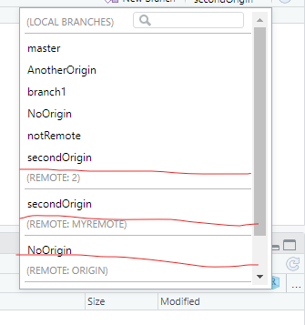

08: Branches
1 Purpose
Show how to create a branch of your project.
– start with branches within one repository
- talk about origin/master/other branch names
- head (checkout branch/remote branch/ end of branch – unless detached)
1.1 Branch History
Note that history from the origin is based on the last time you Pulled.
- switching branches switches your project
- PUSH and PULL only work on the branch you are on
- When project is new you will Pull only Master (but can see other branches)
- PULL will inform you that a new branch exists and list the branch under Origin – it will not get the files
2 Terminology
Master: the main branch of your project. If you create no branches in your project then you only have the master branch
Origin: the location of the remote repository (you can change the name but origin is default and typically what is used)
Note: You can have multiple remote repositories – but this is rare. If you did have multiple remote repositories then Origin is the location of the original remote repository
Head: the current working Commit (usually at the tip of a branch – the last Commit on the branch)
- more advanced: you can “checkout” an older Commit and this Commit would have HEAD attached to it
– Is there a HEAD to each branch or just one HEAD? Just one.
3 User-created branches
In the previous lesson, we saw how Git crates a branch whenever two different people work are editing the same Commit – let’s say it is Commit #15. Git will then attempt to merge the branched Commit (16a and 16b) into one Commit (16). As long as the two people are editing different files or editing different places in the same file, Git will most likely be successful at merging the Commits. If not, then the second user to create Commit #16 needs to manually merge the branched Commit by fixing the conflicts.
However, there are times where people want to create and maintain new branches of their project.
Some of these reasons are:
- You want to test out code and do not want to interfere with the main project
- You are starting a new version of your project but still want to maintain the old version
- Multiple people want to try multiple solutions to the same problem
3.1 Branches and Commits
Branches within a project essentially create a project within a project
<image of branched project with Commit numbers>
Note: Branches can be merged back into the main project
4 New Branches
Your RStudio Project can only reflect one branch at a time, you can change the branch using the branch drop-down (show image):
Branch Name: Name of the branch you created – this will appear as an option in the branch drop-down
Remote: The name of the online repository – you can connect different branches to different repository
– typical, the “main” repository is called origin – although this is not necessary
Add Remote: Link to a repository not currently on your list
Sync branch with Remote: if uncheck then this branch will only exist on your computer
<do not do anything with Remote – this will open a Pandora’s Box!>
5 Branch drop-down

The branch drop-down lists all of the branches in your project. The original branch was called master <is this always true?> and the original repository is called origin <does not have to be true>. The dropdown menu also organizes the branches by which remote they are attached to…
Note: notRemote is not listed in the sections underneath because it is not attached to a repository (it is local only)
My questions:
Are the branches listed with the repository the exact same as the branches listed with the local computer (maybe?!? - you can checkout branches and also have changes not Pushed/Pulled – check this – does not seem to matter). Perhaps there will be a difference if you have checked out a Commit. But, why give the option to work with the Remote branch instead of the local branch?
6 Git concepts
Before we get into the error messages, we will start with the Git concepts that are involved in these issues: branches, merges, and conflicts.
6.1 Branches
Up until this point in this class, every Commit belonged to one branch, called the master branch. This meant that the Commits were all linear – like chapters in a book. In Git parlance, every Commit has exactly one child Commit and one parent Commit (except the first and last Commit).
However, in Git a project can have multiple branches. In other words, a Commit can have more than one child Commit – think of it as a fork in the project.
There are two types of branches in Git:
User-created branches: The main reason for someone to create a branch in a project is to test out new features without including them in the main (master) branch until they have been tested. We will talk more about creating your own branches in the next lesson.
Git-created branches: When multiple people are working on the same project, they essentially are all working off of the same book – and they are all writing the next chapter. So, if the book has 15 chapter (i.e., Commits), then everyone is writing a 16th chapter. Effectively, everyone is creating a branch. Most of the time, Git will merge those branches together behind-the-scenes.